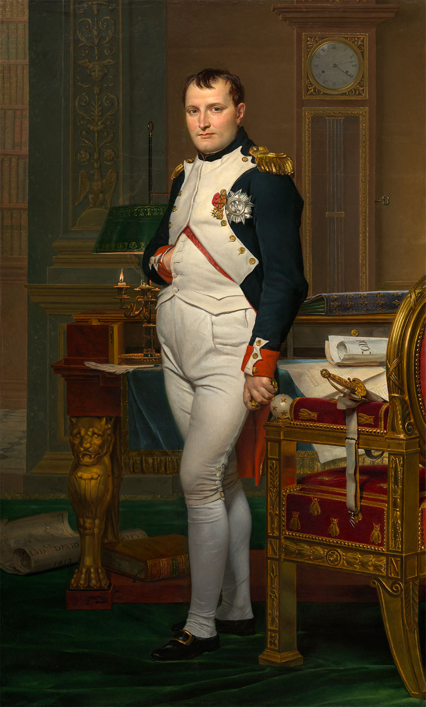

Source: BritannicaWorld War I, the second deadliest war in human history, can have its origins traced back to the most famous Frenchman, a bloodthirsty midget with a bicorne hat. The most famous Frenchman wasn't even French. He was actually a Corsican who grew up hating France, and he was average height during his time, even a bit above average.
An analytics project crowned Napolean Bonaparte as the greatest general of all time; boasting a win rate greater than 90%, he was an extreme underdog in all his losses and most of his victories.
Modern propaganda probably originates from Napolean's time, when stories of his military brilliance turned him from an artillery soldier to a commander, and from a commander to Emperor of a nation who just recently overthrew their hundreds of years-old dynasty in favor of democracy.
Napolean ended the Holy Roman Empire and united 14 former states of the Empire into the puppet state the Confederation of the Rhine. Such unity among Germanic regions would result in the formation of Germany later on in the 19th century as well as the incredible nationalism that sparked its involvement in World War I, the predecessor to World War I. He reinstated slavery in the French colonies resulting in the inspiring Haitian slave rebellion led by Toussaint L'Ouverture, and he sold the Louisiana Territory to a fledgling United States. In the regions he conquered he brought with him his reforms, such as the metric system and the idea of public high schools, which would spread to the rest of the world. It's easy to see why he is on this list.